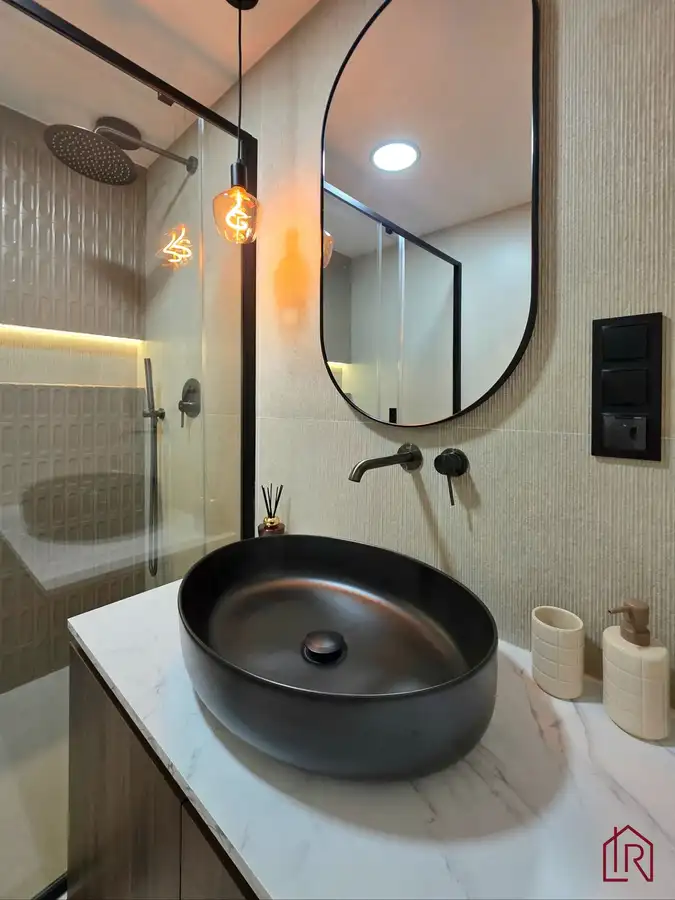
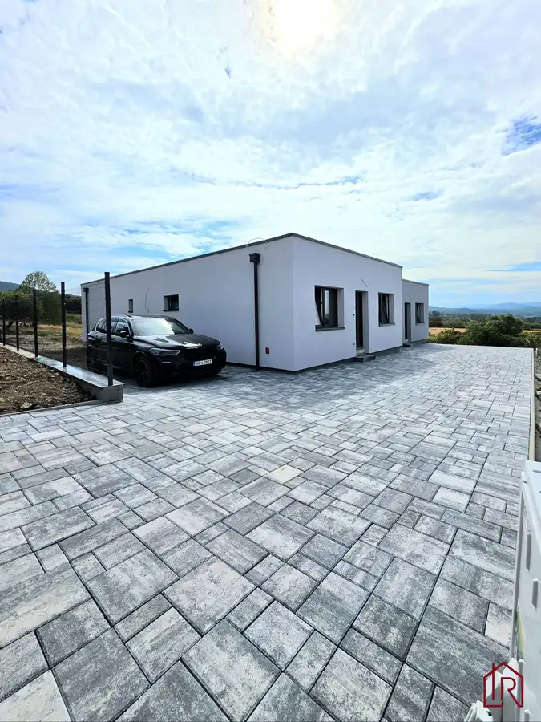
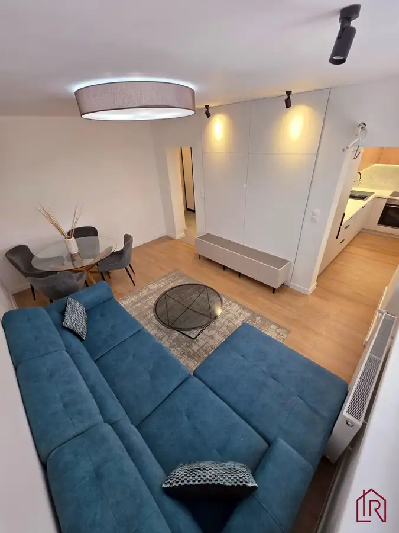
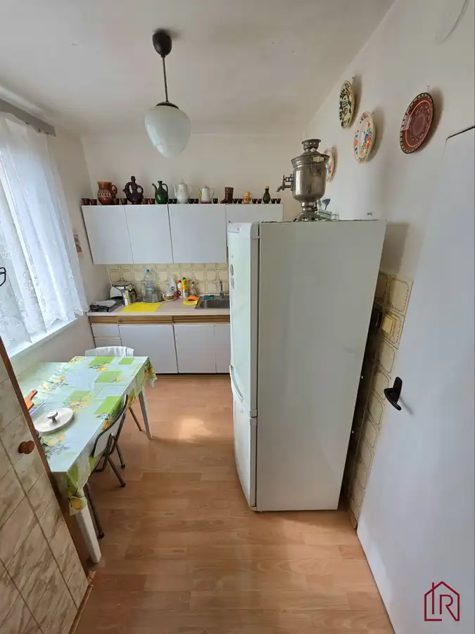
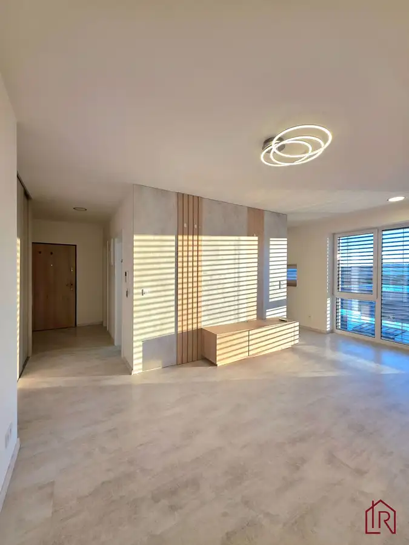
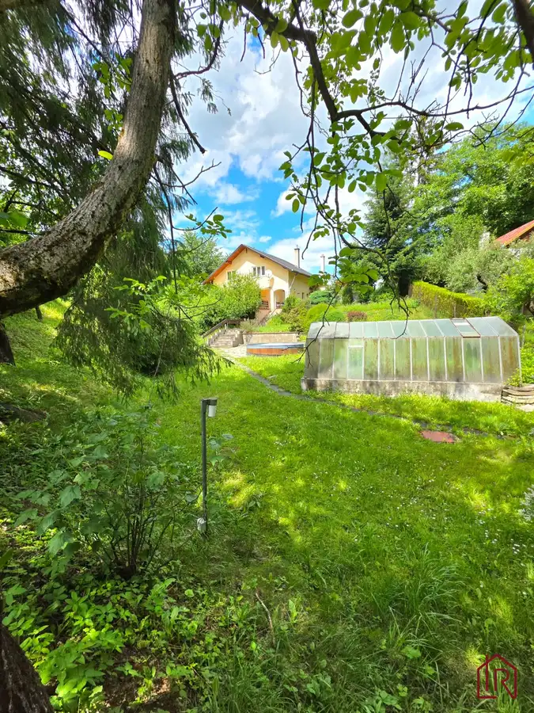

Aktuálna ponuka
Nehnuteľnosti, ktoré ponúkam
10 nehnuteľností na predaj a prenájom. Vyberte typ, alebo napíšte lokalitu.
10 z 10 ponúk
 Záhrady8
75 000 €Záhrada s chatkou, Košice – Krásna, 716 m², elektrina
mestská časť Krásna, Košice
716 m²
IMPULZ REAL a Lucia Talianová ponúkajú na predaj záhradu so staršou rekreačnou chatkou v mestskej časti Košice – Krásna. Rovinatý pozemok s výmerou…
Záhrady8
75 000 €Záhrada s chatkou, Košice – Krásna, 716 m², elektrina
mestská časť Krásna, Košice
716 m²
IMPULZ REAL a Lucia Talianová ponúkajú na predaj záhradu so staršou rekreačnou chatkou v mestskej časti Košice – Krásna. Rovinatý pozemok s výmerou…
 Nebytové priestory6
150 000 €Investičný priestor, Lorinčík, 4,3 % výnos
mestská časť Lorinčík, Košice
52.23 m²
IMPULZ REAL a Lucia Talianová ponúkajú na predaj investičný komerčný priestor na ulici Pod Hájmi v projekte Lorinčík Háje, Košice – Lorinčík.…
Nebytové priestory6
150 000 €Investičný priestor, Lorinčík, 4,3 % výnos
mestská časť Lorinčík, Košice
52.23 m²
IMPULZ REAL a Lucia Talianová ponúkajú na predaj investičný komerčný priestor na ulici Pod Hájmi v projekte Lorinčík Háje, Košice – Lorinčík.…
 Byt10
249 900 €4 - izbový byt, Košice Terasa, Bernolákova, 82 m²
Západ, Košice
4-izbový78 m²3. podlažie
Impulz Real a Lucia Talianová ponúkajú exkluzívne na predaj priestranný 4‑izbový byt s loggiou a pivnicou na správnej adrese. Táto nehnuteľnosť spája…
Byt10
249 900 €4 - izbový byt, Košice Terasa, Bernolákova, 82 m²
Západ, Košice
4-izbový78 m²3. podlažie
Impulz Real a Lucia Talianová ponúkajú exkluzívne na predaj priestranný 4‑izbový byt s loggiou a pivnicou na správnej adrese. Táto nehnuteľnosť spája…

Byt10 249 990 €3-izbový byt Košice Furča, luxusná rekonštrukcia mestská časť Dargovských hrdinov, Košice 3-izbový66 m²3. podlažie Byt s celkovou výmerou 72,36 m² (66 m² byt + 2 lodžie s celkovou výmerou 6,36 m²) prešiel kompletnou a kvalitnou rekonštrukciou. Moderný interiér,… Byt10
259 800 €3-izbový byt, Košice - Západ, komplet rekonštrukcia, 66m2
mestská časť Západ, Košice
3-izbový64 m²7. podlažie
IMPULZ REAL a Lucia Talianová ponúkajú na predaj kompletne zrekonštruovaný 3-izbový byt na Muškátovej ulici v Košiciach. Byt o výmere 66 m2 disponuje…
Byt10
259 800 €3-izbový byt, Košice - Západ, komplet rekonštrukcia, 66m2
mestská časť Západ, Košice
3-izbový64 m²7. podlažie
IMPULZ REAL a Lucia Talianová ponúkajú na predaj kompletne zrekonštruovaný 3-izbový byt na Muškátovej ulici v Košiciach. Byt o výmere 66 m2 disponuje…

Rodinné domy10 259 990 €Rodinný dom na kľúč, vrátane kuch. linky, novostavba, V. Kamenica Okolie, Vyšná Kamenica 4-izbový101.58 m² IMPULZ REAL a Lucia Talianová ponúkajú na predaj 4-izbový rodinný dom v obci Vyšná Kamenica. Novostavba bungalovu s úžitkovou plochou 101 m² sa…
Byt10 259 000 €3i, OV, 65m2 + LO, Terasa, Čapajevova, nová rekonštrukcia mestská časť Západ, Košice 3-izbový65 m²2. podlažie Hlavné benefity ponuky: - kompletná, úplne nová rekonštrukcia - výmera 65m2 + loggia - 1. poschodie – pod bytom sa nachádza ďalší byt -…
Byt10 167 000 €2-izbový byt, Košice – Južná trieda, 51 m2 mestská časť Juh, Košice 2-izbový51 m²3. podlažie IMPULZ REAL a LUCIA TALIANOVÁ ponúkajú na predaj 2-izbový byt na Južnej triede v Košiciach. Výborná dostupnosť do centra mesta- MHD, električky.…
Byt8 Cena dohodou2-izbový byt na prenájom s parkovaním – Lorinčík-Háje mestská časť Lorinčík, Košice 2-izbový54 m²2. podlažie Impulz Real a Lucia Talianová ponúkajú na prenájom moderný 2-izbový tehlový byt v novostavbe v pokojnej lokalite Košice – Lorinčík-Háje. Byt s…
Rodinné domyRezervované10 245 000 €Celoročné bývanie pri Košiciach, pozemok 901 m2 Okolie 4-izbový150 m² Ponúkame na predaj priestrannú nehnuteľnosť vedenú na liste vlastníctva ako rekreačná chata, ktorá je však dlhodobo využívaná na celoročné bývanie a…Tomuto výberu zatiaľ nezodpovedá žiadna ponuka. Napíšte mi, čo hľadáte.